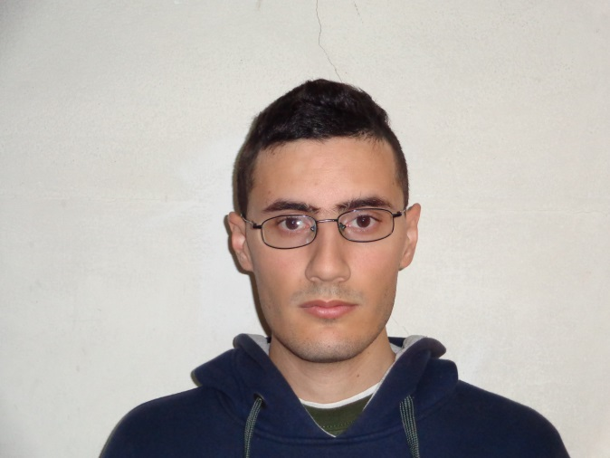

Datos Personales
- Nombre y Apellido: Danilo Abel Lerda
- Edad: 25 años
- DNI: 36201908
- Domicilio: Calle 110 nro. 615, Gral. Pico, La Pampa
- Teléfono: (2302) 693005
- E-mail: dani_lerda@hotmail.com
- Estado Civil: Soltero(sin hijos)
Formación Académica
- Nivel Secundario Completo
- Curso de Inglés “Junior Initial Level” (2004), realizado en el Instituto Superior de Tecnología Aplicada de General Pico
- Curso de informática “Office Básico” (2006), realizado por la Dirección de Juventud, Deportes y Recreación perteneciente a la secretaría de desarrollo social de la municipalidad de General Pico (se vio Excel, Word y PowerPoint)
- Curso de formación profesional para Auxiliar de Laboratorio (2007-2009) realizado por la Escuela Normal Mixta de General Pico
- Incompleta (45% completa) la carrera de Licenciatura en Física, realizada en la Facultad de Matemática, Astronomía y Física (FaMAF) dependencia de la Universidad Nacional de Córdoba (UNC)
- Recibido de la Facultad de Ingeniería de General Pico perteneciente a la UNLPam con el título de Analista Programador
- Actualizando realizando la carrera de Ingeniería en Sistemas y en Computación en la Facultad de Ingeniería de nuestra ciudad
- Curso de inglés llamado “Inglés 3” dictado por la facultad antes citada
Conocimiento de Idiomas
- Inglés: Intermedio(para leer y escribir)
Conocimientos de Lenguajes Informáticos
Buen conocimiento en lenguajes como Java, C/C++, y en lenguajes Web (JavaScript, PHP)
Experiencia Laboral
Trabajé durante la temporada 2013/2014 y 2014/2015 en Cecchetto en atención al público
Disponibilidad de Horarios
A pesar de estar cursando son carreras, no curso demasiadas materias, igualmente mi interés y despliegue están enfocado en el trabajo